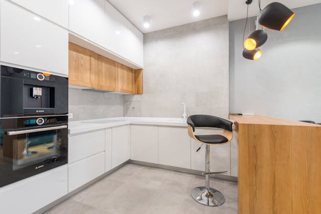

A modern konyha napjainkban az egyik legnépszerűbb választás, mely a funkcionalitást és
az esztétika
tökéletes egyensúlyát képviseli. A modern konyha jellemzője, ahogy a modern lakberendezésé, a letisztult
vonalvezetés, a minimalista design és az innovatív technológiai megoldások.

Vidéki konyha vagy country konyha, farmstílusú konyha, bárhogy is hívjuk
kifinomultságát az apró, megtervezett részletek adják: a porcelán és antikolt fogók, a konyhai
kiegészítők, a csipkeszegéllyel díszített fonott kosarak, a porcelán fűszertartók, a vidéki jelenetekkel
mintázott falióra, bögre…

Nem kell mindenáron a divatot követni. Sokan vannak, akik a lakberendezést, vagy az
öltözködést nem pusztán a szükségleteik kielégítésére, hanem
tudatosan önmaguk kifejezésére használják. Szokatlan hangulatok, máshol össze-nem-illőnek tartott
anyagok és tárgyak keveredése.

Az indusztriális stílusra a minimalizmus és a letisztult design jellemző. A konyha
markáns, egyedi
külsejét a rozsdamentes acél felületek, a fekete, a szögletes elemek és a rozsda hatású falfelület adja.

A modern konyha

A modern konyha legfontosabb jellemzője, hogy praktikus. Mindennek megvan a helye, nincs
káosz, rendetlenség,
elegendő munkafelület van az ételkészítéshez. A tervezők odafigyelnek rá, hogy minden kézre álljon, mégse
legyen semmi útban. A modern konyhákban előszeretettel használnak sima felületű, nem túl díszített
anyagokat, amelyek így nagyon könnyen tisztíthatóak. Divatosak a magasfényű bútorok, illetve az akril
munkapultok. A vasalatok megválasztásánál is a praktikusság és a kihasználhatóság az első. A modern
konyhákban gyakran vízszintesen helyezik el a hosszúkás alakú, keskeny fogantyúkat, de kedveltek a fogantyú
nélküli, nyomásra nyíló bútorok is. Kevés a nyitott elem, gyakran egyáltalán nincs. Az üveges részek savmart
üveggel készülnek, így ezek is zártabb hatásúak. A modern konyhákban a háztartási gépek beépített verzióit
részesítik előnyben, és kényelmes magasságban helyezik el őket, nem feltétlenül a földön, így nem kell
hajolgatni. Kicsit háttérbe szorult a csempe, egyre gyakrabban a rendkívül mutatós és tartós üveg hátfalak
mellett döntenek a lakástulajdonosok.
A vidéki konyha

A country stílus régen és most is nagyon népszerű volt, de már ez a lakberendezési irányzat
is új értelmet nyert és más színben tündököl az otthonokban. A modern, vidékies hangulat a konyhában és az
étkezőben tud legjobban érvényesülni.
Ma már nemcsak a családi házakba, de a városi lakásokba is lehetőségünk van behozni a vidékies
stílusjegyeket. Számos bútorgyártó cég ismerte fel, hogy újra közkedvelt lett a country konyha, vagy talán
soha nem is ment ki a divatból. Ezért régi darabokat új, mai formába öntöttek, hogy jól passzoljon a modern
lakások enteriőrjeihez is. A country stílus legjellemzőbb elemeit az amerikai filmekből ismerjük, ahol a
családi élet mindig a konyhasziget körül zajlik. Ez a bútordarab elengedhetetlen hozzávalója ennek a
hangulatnak, hiszen a mai életvitelhez igazodva már fontosabb közösségi tér lett a konyha és az étkező, mint
a nappali.
A bohém konyha

Leggyakrabban művészek otthonában látni ezt a stílust. Ők bátran, a maguk sajátos, egyéni
módján válogatják a
mindennapjaikat kísérő bútorokat, kiegészítőket. Ide sorolhatóak még a különféle etno-, vintage-, vagy
nagyon színpompás őrült kifejezésmódok - ezeknek még majd külön-külön bejegyzést szentelek. Ha úgy érzed nem
találtad még meg életterednek azt a dizájnját, amiben jól érzed magad, akkor lehet, hogy ez lesz az. Ehhez
viszont le kell nyúlnod a lelked legmélyére, elképzelni milyen lenne egy teljesen feketére hangolt szobában
ébredni - vagy rózsaszínben, vagy sárgában, ami csak eszedbe jut. A lehetőségek száma végtelen, de
legbelülről kell kihozni azt, ami igazán te vagy. Nem a trendet magadra erőltetni.
Az indusztriális konyha
Ahhoz, hogy indusztriális hangulatot teremtsünk a konyhában, alapvetően nagy térre van
szükségünk, hiszen a stílus a régi,elhagyatott gyárépületek sajátja, amik eleve tágas és nagy belmagasságú
tereket feltételeznek.
Amennyiben ez nem adott, akkor sem kell lemondani az ipari hangulatról, hiszen a beton, a cement és
műgyanta, a metrócsempék, az óriásmedencés mosogatók, az ipari hangulatú csaptelepek, és a szabadon futó
gépészeti csövek, kisebb alapterületen is lehetővé teszik ennek megteremtését.